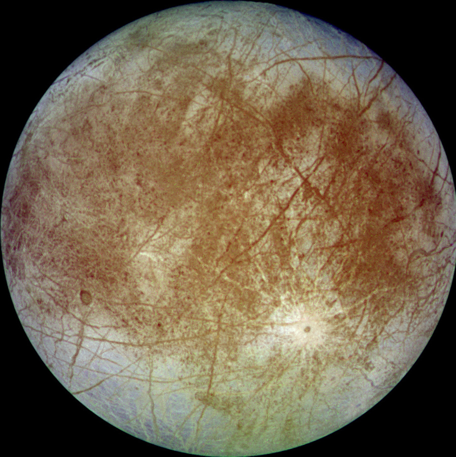

Europa is about 0.7 billion times smaller than earths moon.
Europa is 16,000,000,000km in size.

Might contain a salt water ocean beneath its crust.Surface is smooth and bright. Thought to have an iron core. A rocky mantle. In 1995 to 2003 we made a lot of flybys of Europa.